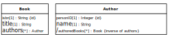
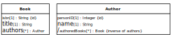

Since classical OO programming languages do not support associations as first class citizens, but only classes and reference properties representing implicit associations, we have to eliminate all explicit associations for obtaining an OO design model.
The starting point of our association elimination procedure is an information design model with various kinds of unidirectional and bidirectional associations, such as the model shown in Figure 14.1 above. If the model still contains any non-directional associations, we first have to turn them into directional ones by making a decision on the ownership of their ends, which is typically based on navigability requirements.
Notice that both associations in the Publisher-Book-Author information design model, publisher-publishedBooks and authoredBooks-authors (or Authorship), are bidirectional as indicated by the ownership dots at both association ends. For eliminating all explicit associations from an information design model, we have to perform the following steps:
Eliminate unidirectional associations, connecting a source with a target class, by replacing them with a reference property in the source class such that the target class is its range.
Eliminate bidirectional associations by replacing them with a pair of mutually inverse reference properties.
A unidirectional association connecting a source with a target class is replaced with a corresponding reference property in its source class having the target class as its range. Its multiplicity is the same as the multiplicity of the target association end. Its name is the name of the association end, if there is any, otherwise it is set to the name of the target class (possibly pluralized, if the reference property is multi-valued).
A bidirectional association, such as Authorship in the model shown in Figure
14.1 above, is
replaced with a pair of mutually inverse reference properties, such as
Book::authors and
Author::authoredBooks. Since both reference properties represent
the same information (the same set of binary relationships), it's an option to conisder one
of them being the master and the other one the slave, which is derived from the master. We
discuss the two cases of a one-to-one and a many-to-many association
In the case of a bidirectional one-to-one association, this leads to a pair of mutually inverse single-valued reference properties, one in each of the two associated classes. Since both of them represent essentially the same information (one of them is the inverse of the other), one has to choose which of them is considered the "master", and which of them is the "slave", where the "slave" property is considered to represent the inverse of the "master". In the slave class, the reference property representing the inverse association is designated as a derived property that is automatically updated whenever 1) a new master object is created, 2) the master reference property is updated, or 3) a master object is destroyed.
Figure 14.2. Turn a bidirectional one-to-one association into a pair of mutually inverse single-valued reference properties


A bidirectional many-to-many association is mapped to a pair of mutually inverse multi-valued reference properties, one in each of the two classes participating in the association. Again, in one of the two classes, the multi-valued reference property representing the (inverse) association is designated as a derived property that is automatically updated whenever the corresponding property in the other class (where the association is maintained) is updated.
Figure 14.3. Turn a bidirectional many-to-many association into a master-slave pair of mutually inverse multi-valued reference properties
 
